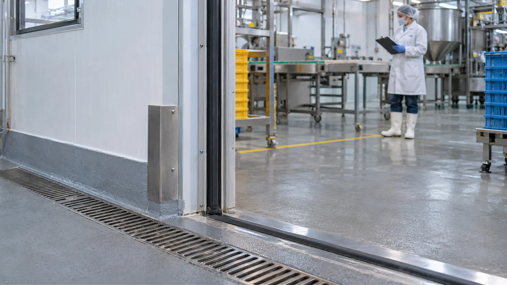

Un aviso como «vi un insecto en depósito» sirve para alertar, pero puede dejar al siguiente turno sin saber dónde volver a mirar. Un registro útil permite encontrar el punto exacto, entender qué se observó y saber quién quedó a cargo del seguimiento.
Qué datos registrar en el momento
- Fecha, hora y turno. Si el aviso llegó después, diferenciá cuándo se vio la señal y cuándo se informó.
- Ubicación precisa. Indicá sector y una referencia que otra persona pueda encontrar, como «recepción, junto al portón 2, lado interior».
- Observación directa. Describí qué viste y, si podés, cuántos ejemplares o señales observaste. Si la identificación es incierta, dejala abierta.
- Contexto. Si ya lo sabés, anotá qué actividad se desarrollaba en el lugar y si había producto o superficies de contacto cerca. Seguí el procedimiento interno si existe una posible afectación.
- Aviso. Dejá constancia de a quién informaste, por qué canal y a qué hora. Sumá una imagen únicamente si el establecimiento lo permite y podés tomarla sin manipular nada.
Cómo se ve un registro que sirve para otro turno
Si ese mismo aviso también llega por radio o por un chat interno, vinculalo al registro inicial. Si después alguien observa otra señal en el mismo lugar, agregá la nueva fecha y hora. Así queda claro si hubo un segundo hallazgo o dos avisos sobre el mismo hecho.

Cómo pasar del aviso al seguimiento
Usá el canal definido por tu establecimiento y dejá el aviso en el registro compartido. En el cambio de turno, verificá que quede claro qué punto requiere revisión, quién lo recibió y cuál es el próximo paso. Cuando se haga la verificación, agregá su fecha y resultado al mismo registro.
Si hay indicios cerca de producto expuesto o superficies en contacto con alimentos, avisá de inmediato al responsable indicado por el procedimiento interno. La persona o equipo designado evalúa la situación y decide qué medidas corresponden. Evitá manipular los hallazgos o aplicar tratamientos por tu cuenta.
Preguntas frecuentes
¿Registro el hallazgo si no sé qué especie es?
Sí. Anotá lo que viste y dejá la identificación como pendiente.
¿Qué pasa si ya se limpió el lugar?
Conservá el aviso original y agregá la hora de la limpieza si está disponible. Si más tarde se vuelve a revisar el punto, registrá esa observación por separado.
¿El registro reemplaza las inspecciones?
El registro ayuda a compartir hallazgos y seguir decisiones. Las inspecciones y el programa de control se organizan según el procedimiento del establecimiento.
Para ampliar, leé qué revisar al planificar el control de plagas en una industria alimentaria.